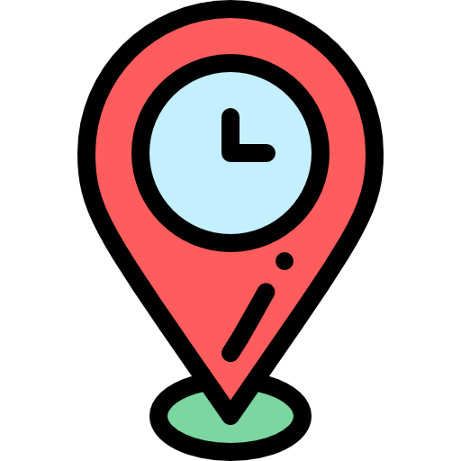
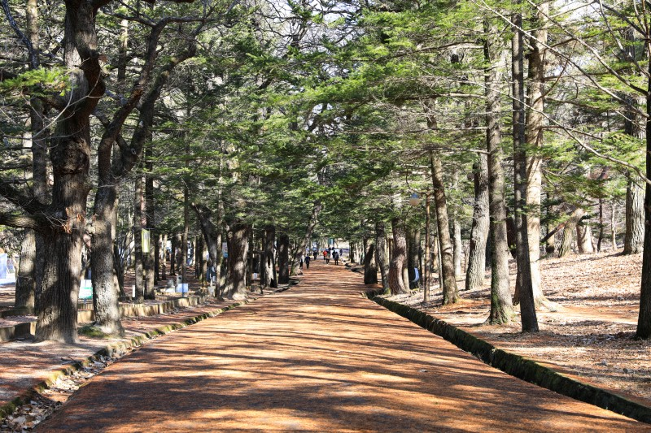

Plogging Course
국내의 플로깅 명소들입니다.
[서울] 서울 한강
소요거리: 2.2km 소요시간: 40분
 서울 마리나 - 서강대교 하단 - 마포대교 하단 - 이벤트 광장
0
[제주] 제주 올레길
소요거리: 11km 소요시간: 180분
쇠소깍 - 서귀포 제주올레여행자센터
0
[전북][부안] 변산 마실길
소요거리: 5km 소요시간: 90분
격포항 - 이순신세트장 - 궁항 - 솔섬
0
[경북][안동] 안동 선비순례길
소요거리: 13.7km 소요시간: 240분
군자마을(오천유적지) - 보광사 - 선성현문화단지 - 안동호반자연휴양림 - 월천서당
0

[충북][보은] 오리숲길
소요거리: 4.5km 소요시간: 100분
속리산 버스터미널 - 오리숲길 입구 - 법주사 - 세조길 입구 - 탈골암 입구 - 세심정 갈림길
0
[경기][수원] 세계문화유산 코스
소요거리: 3.6km 소요시간: 80분
팔달공원 - 화성행궁 - 수원화성 - 방화수류정 - 창룡문
0
[부산] 부산 갈맷길
소요거리: 10km 소요시간: 80분
해운대 해수욕장 - 동백섬 - 영화의거리 - 마린시티 요트경기장 - 영화의 전당 - 민락 수변공원 - 광안리 해수욕장
0
[전북][정읍] 내장산 솔티마을
소요거리: 2.8km 소요시간: 70분
내장산조각공원 - 솔티마루길 - 솔티달빛생태숲 - 생태놀이터 - 송죽마을 - 내장산조각공원
0
[대구] 대구 박물관 코스
소요거리: 2.7km 소요시간: 60분
무학숲도서관 - 유아숲체험원 - 생태탐방로 - 무학산 정상 - 국립대구박물관 - 시문학동산 - 유적공원 - 산책로
0